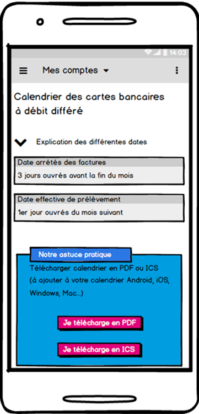
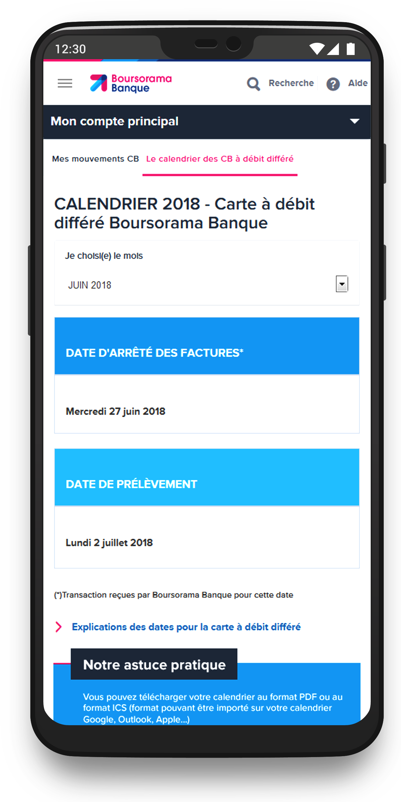

Calendrier à Débit Différé
Améliorer la lisibilité d’un outil bancaire utilisé par des millions de clients
Problème
Le calendrier à débit différé affichait des informations clés dans un tableau peu lisible, notamment sur mobile. Résultat : incompréhension des dates de débit, confusion pour les clients, et surcharge du service client.
Solution
Nous avons repensé l’outil sous forme de carrousel dynamique :
- ✅ Vue mensuelle épurée
- ✅ Dates de prélèvement et de débit mises en évidence
- ✅ Affichage responsive optimisé pour mobile
Ma contribution
J’ai mené l’analyse des retours clients, audité l’existant, conçu l’architecture et le wireflow, réalisé les maquettes responsive (Axure), puis livré un prototype interactif accompagné d’un design system. Le tout validé avec des tests utilisateurs (salariés, retraités, étudiants).
Idéation & Prototypage
Liens vers les maquettes Axure :
üíª Version desktop üì± Version mobileDesign final

Version PC – Aperçu

Version mobile – Aperçu

Vue mensuelle avec surlignage

Calendrier interactif – détail

Navigation intuitive mobile
Résultats
- ✔️ +20% de satisfaction client après mise en ligne
- ✔️ 60% des utilisateurs interagissent davantage avec le carrousel mobile
- ✔️ Gains d’efficacité pour les équipes marketing : déploiement plus rapide des campagnes